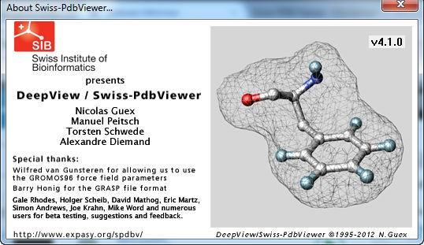

Step 1: Download SwissPDB Viewer
Download the SwissPDB viewer from the official website.
Download SwissPDBStep 2: Install and Launch SwissPDB Viewer
Unzip the downloaded file to your Desktop and double-click the SwissPDB icon to launch.
Step 3: Understand Basic Controls
| Movement | Mouse Control | Description |
|---|---|---|
| Rotate | Left mouse button | Up/Down rotates about x-axis. Left/Right rotates about y-axis. |
| Translate | Right mouse button | Drag the molecule in any direction. |
| Zoom | Both mouse buttons | Move up to zoom out, down to zoom in. |
Step 4: Centre View
Use the leftmost toolbar button to center your molecule in the viewing window.

Step 5: Access the Protein Database
Visit the Protein Data Bank to download structure files.
Visit PDB